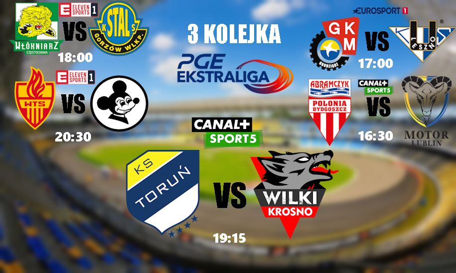

Newsy ze świata SC2023!!!

Już dzisiaj 16.06.2023 odbędzie się 3 kolejka sc2023 ekstraligi
Hitem kolejki będzie mecz KS Toruń VS Wilki Krosno ogólnie całą kolejka można było by nazwać cisza przed burzą
Mecz Toruń VS Krosno będzie transmitowany na żywo w ramach współpracy z Bateman S.A. Źródło skąd będzie można oglądać transmisje jeszcze nie zostało ogłoszone